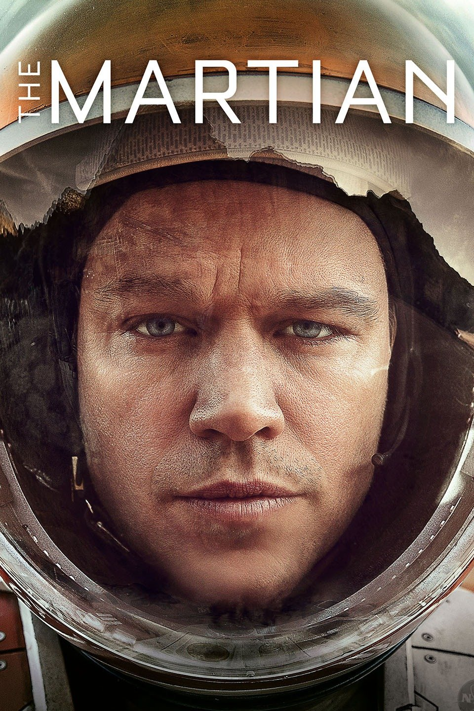

During a manned mission to Mars, Astronaut is presumed dead after a fierce storm and left behind by his crew. But Watney has survived and finds himself stranded and alone on the hostile planet. With only meager supplies, he must draw upon his ingenuity, wit and spirit to subsist and find a way to signal to Earth that he is alive. Mark Watney survived 500 sols alone on Mars.

Sol
One sol is the duration of a solar day on Mars, which is slightly longer than an Earth day. Specifically, one sol on Mars is approximately 24 hours and 39 minutes long, or about 1.027 Earth days. The exact length of a Martian day can vary slightly depending on the time of year and other factors, but this is a good approximation.
Day
One day is 24 hours. The amount of time required for one full rotation of the Earth from the perspective of the Sun. More specifically this unit is known as a solar day.
Review
"The Martian" is a thrilling science-fiction movie directed by Ridley Scott, based on the novel of the same name by Andy Weir. The film tells the story of Mark Watney, an astronaut who is stranded on Mars after his crew members assume he is dead and leave him behind.
The movie does an excellent job of immersing the audience in the harsh Martian environment, creating a sense of isolation and danger that Watney must overcome in order to survive. Matt Damon's portrayal of Mark Watney is outstanding, capturing the character's intelligence, humor, and determination as he works to find a way back to Earth.
One of the strengths of the film is its emphasis on the science behind Watney's survival. The movie depicts Watney using his knowledge and skills as a botanist and engineer to grow food, generate water, and communicate with Earth. The attention to detail in the scientific aspects of the movie is impressive, and it makes the story more engaging and believable.
The supporting cast, including Jessica Chastain, Jeff Daniels, and Chiwetel Ejiofor, also delivers strong performances, helping to ground the story in reality and providing a sense of urgency as they work to bring Watney home.
Overall, "The Martian" is an exciting and well-crafted movie that successfully blends science-fiction with real-world science. It's a story of resilience, ingenuity, and the human spirit, and it's a movie that is sure to inspire and entertain audiences for years to come.